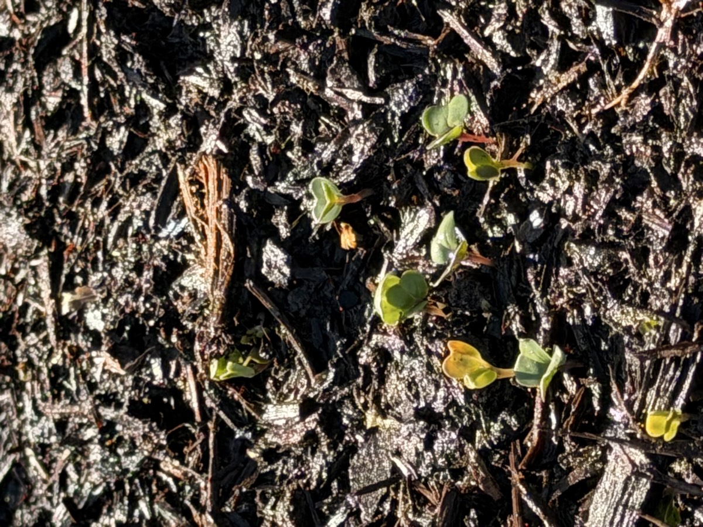

The plot
Our garden plot is located in the best neighborhood in Chattanooga, Jefferson Heights. It's a father-son project — my dad and I claimed an empty plot at the community garden in the park down the street and decided to see what we could grow.
The plot is 11 × 14 feet with concrete curbing on all sides, split into two planting beds with a walking path down the center. We filled it with garden mix over flattened cardboard and planted everything from root crops and brassicas to tomatoes, okra, and cucumbers on a trellis. This site is where we're documenting the whole journey.
Plot layout
Thanks for following along. This garden is a real project, and so is this website — I'm learning to build it using AI tools. If you have any tips on either the gardening or the web development, I'd love to hear them!
Drop me a line → ourlanefarms@gmail.com
Drop me a line → ourlanefarms@gmail.com
Latest from the journal
April 14, 2026
First planting, first sprouts. Seeds are in the ground — carrots, radishes, bok choy, herbs, and flowers. Tomato and pepper transplants went out after last frost. And already: radish sprouts pushing through the soil. Something is actually growing.
